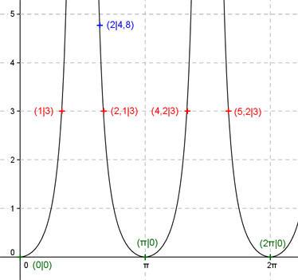

Aufgabe 211 Ergänzen Sie die Wertetabelle für x zwischen 0 und 2π: y = tan2 x x 2 1 oder 2,1 oder 4,2 oder 5,2 y 4,8 3 Berechnung der Nullstellen: tan2 x = 0 |√ --> tan x = 0 --> x = k * π mit k = 0, 1, 2 --> x1 = 0 oder 0° x2 = π oder 180° x3 = 2π oder 360°  Funktionswert an einer Stelle x ermitteln: 2 * 180° x = 2 oder ---------- = 114,6° π f(2) = tan2 2 = tan 2 * tan 2 = tan2 114,6° = 4,8 gerundet. Berechnung der x-Werte für y = f(x) = 3 f(x) = 3 eingesetzt, existiert zweimal zwischen 0 und π bzw. 0° und 180° und zweimal zwischen π und 2π bzw. 180° und 360° (siehe Graph). tan2 x = 3 |√ --> tan x = 1,732 --> 1,05 * 180° x1 = arc tan 1,732 = 1,05 oder ------------- = 60,2° (gerundet) π x2 = 1,05 + π = 4,2 oder 240,6° x3 = (π - 1,05) = 2,1 oder 120,3° x4 = (2,1 + π) = 5,2 oder 298° gerundet.